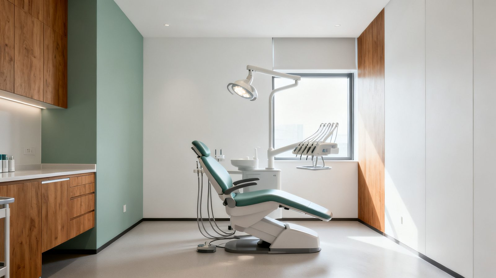

Wealth management for Texas practice owners, before and after a sale. The real question is not only what a buyer will pay. It is what you keep, and whether it funds the life you want.
For a long time, most practice owners sold to another dentist, often an associate who bought in over time. Today, dental service organizations (DSOs) and the private equity firms behind many of them are also active buyers, and one of the largest DSOs in the country is headquartered in North Texas.
That means more choices, and harder ones. A sale to another dentist is usually mostly cash at closing. A DSO offer may mix cash with equity in the DSO, a partnership stake in your own practice, an earnout, and a commitment to keep practicing for several years. Two offers with the same headline number can leave you with very different amounts, at different times, taxed in different ways.
For most practice owners, the practice is the largest asset they have. That makes the sale the biggest financial decision of your career, and the time to plan for it is before the offer arrives.
You built a practice patients trust. The next step deserves the same care.
Decidedly Wealth Management is a wealth management firm. We do not broker practice sales and we do not sell practices. We work on the personal side of your balance sheet, before and after a sale, and alongside the CPA, attorney and transition advisor you choose.
Put a number on the life you want after dentistry, then see how the practice, your real estate and your other assets add up against it. If there is a gap, you find out while there is still time to close it.
Look at an offer in terms of what you keep. Cash at closing, DSO equity, a retained stake and a work-back period are not worth the same, and they are not taxed the same. We help you see the difference and bring the right questions to your CPA and attorney.
Turn a lump sum into a plan: how the proceeds are invested, the income they need to produce, and how to manage risk once your wealth is no longer tied up in one practice.
Decide who your wealth should serve, from family to your team to causes you care about, and work with your estate attorney so the plan is in place before the deal is done.
Most of the money in an exit is made, or lost, in the years before it. Here is how the five key decisions map onto the road from today to life after ownership.
Our process is built around five decisions. For a practice owner, they turn a sale from a transaction into a plan for the rest of your life.
Before you look at an offer, get clear on what matters to you. Some dentists want to put down the handpiece for good. Others want to keep practicing without the burden of ownership. Your values shape which path, and which buyer, is right for you.
Know where you stand today: the practice, the building if you own it, retirement accounts, debt, and what your life actually costs. You cannot judge an offer until you know what it has to do for you.
What does life after ownership look like? We help you define it and put a number on it: how much you need to walk away with, after taxes, to fund it.
Close the gap between what the practice could bring and what you need. That can mean working on the things buyers look at, planning with your CPA and attorney ahead of the deal, and building an investment plan for the proceeds.
Family, your team, your community, the causes you care about. Decide who your wealth should serve, and plan for it early, while more options are open.

Fewer young dentists are buying practices, and more are joining dental service organizations (DSOs). That shifts who is on the other side of the table when you sell. It says nothing about what any one practice will sell for. It does mean that owners who are prepared, with an associate in place, a strong hygiene program and clean reports, tend to have more options.
Share of U.S. dentists who owned their practice in 2023, down from 85% in 2005.
Share of dentists less than 10 years out of dental school who were affiliated with a DSO in 2024, up from 24% in 2023.
Practices one North Texas based DSO had partnered with by late 2025, after adding 47 practices that year alone.
Buyers are active. Prepared owners get better options.
Sources: ADA Health Policy Institute, Practice Ownership Trends in Dentistry: A New Look at Old Data, June 2025; Group Dentistry Now, DSO Deal Roundup, Oct 1, 2025 (MB2 Dental, Carrollton, TX). Examples of market activity only. Not an endorsement of any buyer and not a prediction about any sale.
Three short steps. Get a readiness score built around what practice buyers look at, an estimated value range, and an estimate of what you would keep after taxes. Built for Texas dentists.
This page is for general education only and is not tax, legal or investment advice. Decidedly Wealth Management does not broker the sale of businesses or provide formal business valuations. The calculator gives a rough estimate based on published market ranges and the answers you enter. Talk with your CPA and attorney about your specific situation.
The Decision Lab starts with a complimentary 30-minute conversation. No cost, no commitment. Just a conversation about what you have built and what you want it to do for you and your family.
Book a Decision Lab session